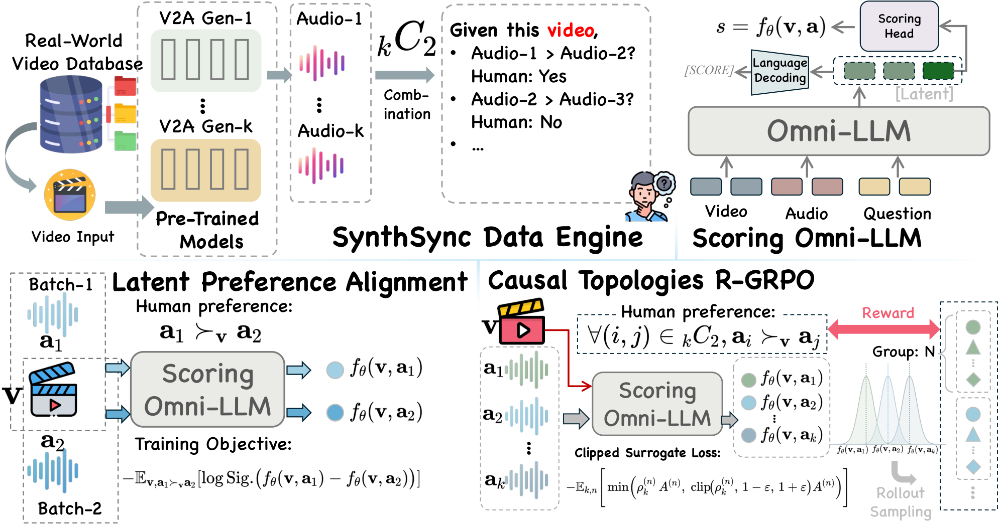
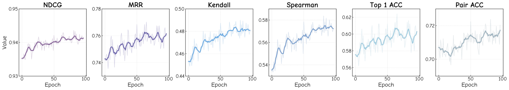
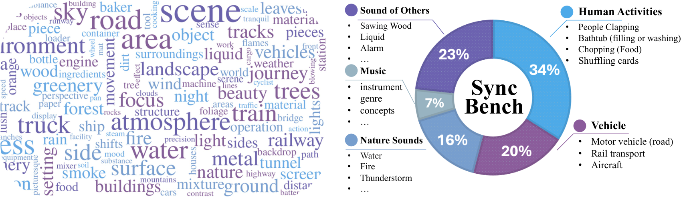
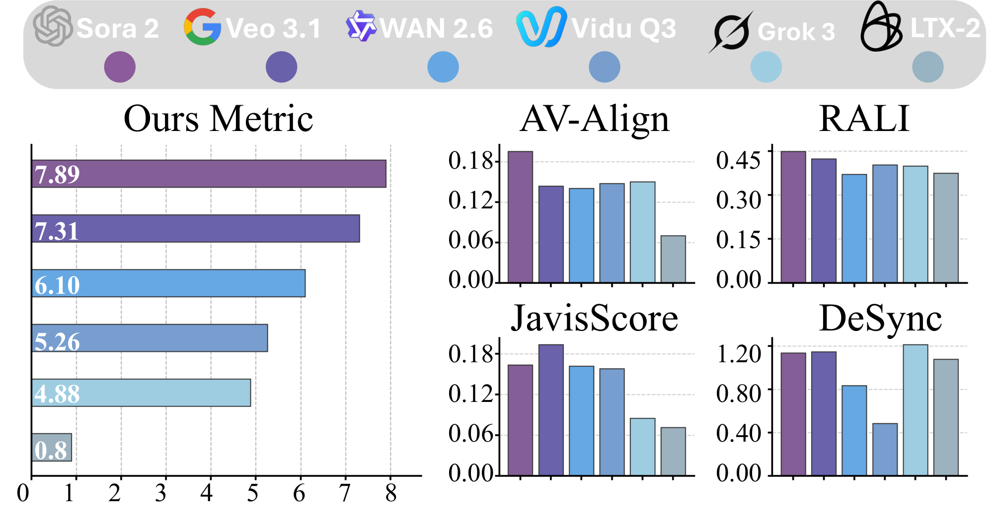
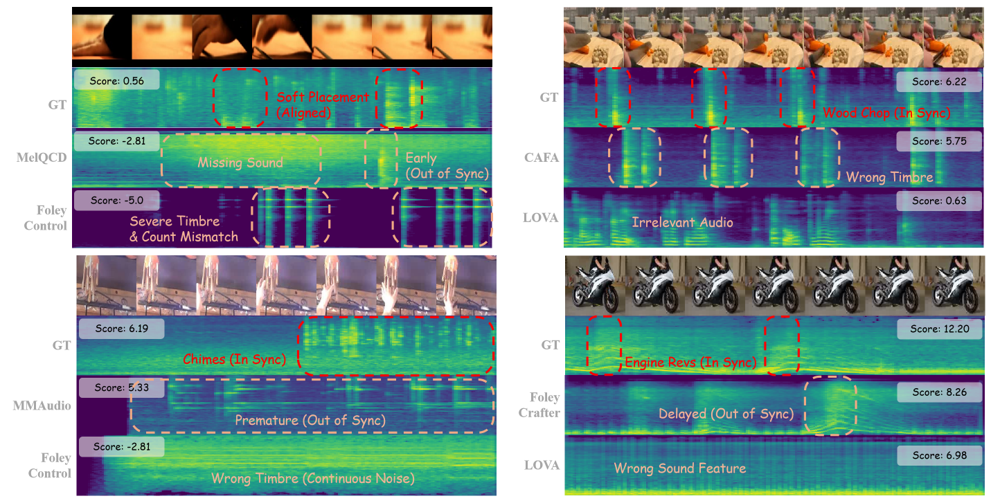

As audio-visual generative models evolve into world simulators, cross-modal synchronization is a critical proxy for the consistency of world dynamics. Yet existing metrics presume structural correctness, reducing synchronization to mere temporal alignment, and thus fail on generative outputs with structural hallucinations and asymmetric cross-modal relations. This creates a paradox: human evaluators rely on relative, reference-dependent comparisons, whereas automated metrics require reference-free, absolute scalars. We resolve it by distilling relative human perception into a continuous, globally consistent metric: we introduce SynthSync, a dataset of generative failures ranked via pairwise human annotations; adapt an Omni-LLM with a continuous latent projection to translate relative rankings into absolute values; and propose R-GRPO (Real-Valued Group Relative Policy Optimization) to internalize global causal structure via listwise score distributions. Our metric achieves state-of-the-art human-preference alignment and powers SyncBench, a standardized benchmark for AV-generation models.
Same prompt, six AV-generation models. Our reference-free score (higher = better synchronized) ranks them in line with human perception. Unmute to hear the generated audio.
“A soapy solution being sprayed onto a colorful mat during cleaning…” (SyncBench #004)
Veo-3.1 +7.30
Sora-2 +5.00
WAN-2.6 +1.75
LTX-2 +0.56
Grok-3 −0.06
Vidu-Q3 −0.94
“A craftsman meticulously carving a piece of wood…” (SyncBench #029)
Sora-2 +13.84
Veo-3.1 +11.02
Vidu-Q3 +9.07
WAN-2.6 +8.76
Grok-3 +4.19
LTX-2 +4.16
“A close-up of a piece of wood being struck by a tool…” (SyncBench #066)
Sora-2 +9.95
Vidu-Q3 +4.56
Veo-3.1 +3.66
WAN-2.6 +2.13
Grok-3 +1.25
LTX-2 −0.25
Our evaluator is a Qwen2.5-Omni-3B backbone whose discrete language head is
replaced by a continuous MLP that reads the hidden state at a
[SCORE] token, producing a single reference-free scalar
s = MLP(hscore). Because ground truth is relative, we train by
ranking rather than regression, aligning the scalar to human preference
topology in two stages.

Figure 1. Framework. Stage I (Preference SFT): a Bradley-Terry-Luce objective over pairwise preferences induces a globally consistent, reference-free scale, with a dynamic curriculum from easy to hard pairs. Stage II (R-GRPO): the scalar is reparameterized as a Gaussian policy; listwise rollouts per video are rewarded by how well their full ranking matches ground truth (NDCG / Kendall / Spearman / Top-1 / MRR / pairwise), with group-relative advantages, a closed-form Gaussian importance ratio, PPO clipping, and a KL penalty.

Figure 2. Learning curves. Validation metrics during R-GRPO post-training.

Figure 3. SyncBench spans 185 prompts — prompt word cloud (left) and category breakdown across five audio-visual domains (right).

Figure 4. Our continuous metric (main chart) cleanly stratifies six AV-generation models; legacy evaluators (sub-charts) produce volatile, contradictory rankings.
| Metric | PFT baseline | + R-GRPO (ours) |
|---|---|---|
| NDCG | 0.9353 | 0.9435 |
| Kendall's τ | 0.4515 | 0.4899 |
| MRR | 0.7316 | 0.7674 |
| Pairwise Acc (%) | 71.16 | 72.38 |
Ablation (NDCG / Pair-Acc): base 0.8531 / 51.02 → +SynthSync 0.9224 / 66.60 → +SFT 0.9353 / 71.16 → +R-GRPO 0.9435 / 72.38.

Figure 5. Qualitative examples. Our metric penalizes missing events, mistimed responses, timbre mismatch, and event-count errors — not low-level signal similarity.
@inproceedings{qian2026beyond,
title = {Beyond Time Shifts: Adapting Omni-LLM as a Reference-Free
Evaluator for Generative Audio-Visual Models},
author = {Qian, Yijie and Wang, Juncheng and Xu, Chao and Wang, Huihan and
Feng, Yuxiang and Liu, Yang and Sun, Baigui and Liu, Yong and
Wang, Shujun},
booktitle = {European Conference on Computer Vision (ECCV)},
year = {2026}
}